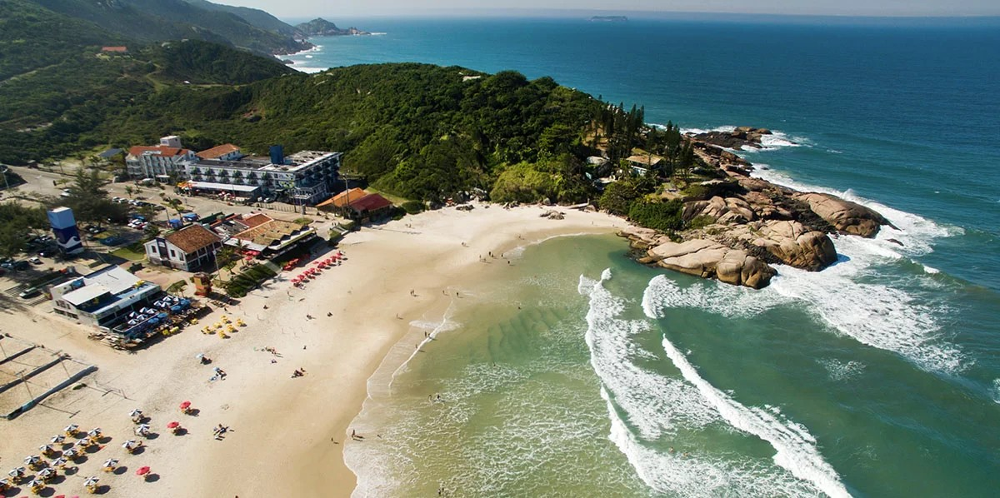
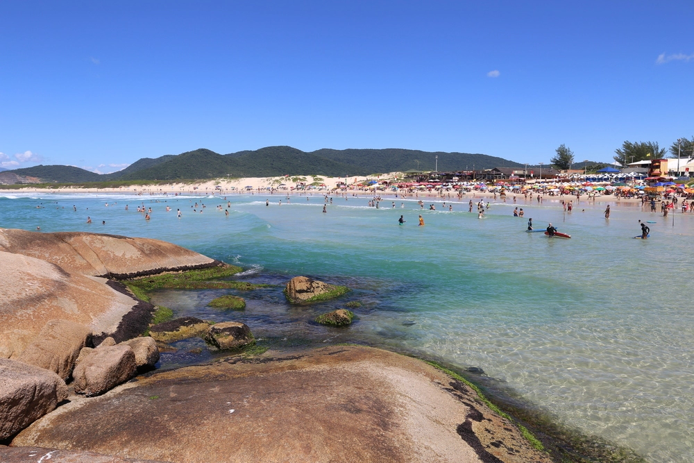
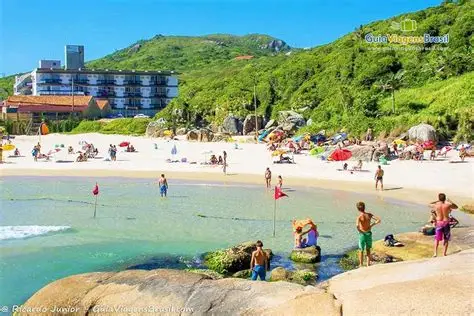

Presentación
Praia da Joaquina es una de las playas más icónicas de Floripa. Famosa por sus potentes olas y sus extensas dunas de arena blanca, atrae tanto a surfistas como a visitantes que buscan un paisaje imponente y dinámico.
- Ambiente: Joven y activo
- Público: Surfistas, turistas, aventureros
- Especial: Dunas y campeonatos de surf



Ubicación
Barrio: Joaquina — este de la isla
Distancia al centro: ~25 minutos en auto
Accesos: Buen acceso en auto y transporte público
Guía turística de Joaquina
Surf profesional
Una de las playas más famosas para el surf, con olas potentes y campeonatos internacionales.
Dunas
Las dunas de Joaquina son ideales para sandboard y para disfrutar del paisaje.
Fotografía
Un entorno perfecto para capturar paisajes únicos entre el mar y la arena.
Paradores de playa
Restaurantes y bares frente al mar para descansar y disfrutar del ambiente.